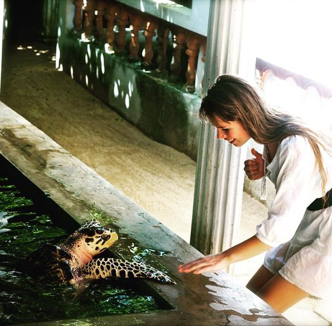

About Bentota Turtle Hatchery
The Kosgoda Turtle Conservation Project, also known as the Bentota Turtle Hatchery, is a well-liked tourist destination and conservation facility situated in Kosgoda, a seaside community close to Bentota, Sri Lanka.

Conservation efforts:
The turtle hatchery is essential to the survival of marine turtles.
The hatchery protects eggs from predators and human activity by gathering them and transporting them to secure locations.
When the eggs hatch, the hatchlings are carefully supervised turtle releases before being released into the ocean.
Turtle Rehabilitation
The Bentota Turtle Hatchery also offers treatment and rehabilitation for ill or wounded turtles in addition to its conservation activities. For the care of turtles hurt by fishing nets, boat collisions, or other human-related activities, they offer tanks and facilities.
Location: Bentota Turtle Hatchery
To guarantee a pleasurable and instructive experience, it is advised to check for the most recent information on visiting hours, guided tours, and other specifics before making travel plans to the Bentota Turtle Hatchery.